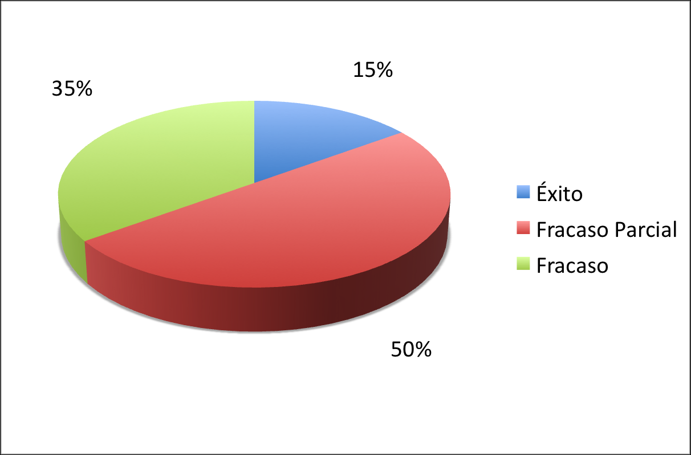

¿De que deuda me hablan?
¿Se imaginan tener que agregarle un nuevo dormitorio, y un jacuzzi al baño, a cada departamento de un edificio de 24 pisos, todo durante un fin de semana, y con los inquilinos dentro?
Hace unos meses atrás hablé con ex profesor auxiliar de ingeniería de software, en una universidad tradicional. En esa ocasión me mostró un examen, donde se les pedía a los alumnos comentar la afirmación del Chaos Report sobre la alta tasa de fracaso de los proyectos de software. ¿Qué leseras les enseñabas a tus alumnos?! fue mi comentario sarcástico.
Me acordé de esa discusión por un post reciente de Alejandro Barros, que parte provocándonos con la frase:
¿Se imaginan que sólo el 32% de los proyectos inmobiliarios o de infraestructura fueran exitosos?
Y lo titula: Comportamiento de proyectos TI: Están en deuda!
¡En Deuda! por supuesto no estoy de acuerdo, y tengo varios argumentos, y voy a exponerlos en este y varios post más.
El post de Alejandro parte mencionando el famoso Chaos Report, del que algo hemos hablado en el pasado, pero va más allá, porque aporta otras interesantes cifras, como esta encuesta y artículo en Dr Dobbs Journal. Vamos a ir por parte, a ver si le encontramos sentido y si debemos reconocer esta deuda o no (ya tengo muchas deudas para tener que asumir una más).
El tema es polémico, por cierto, porque da para todo tipo de cifras, y abusos. Por ejemplo, Oracle dice que el 90% de sus proyectos son exitosos (toma!). Bueno, ya saben lo que dice House, todos mienten!
En este post nos preocuparemos del Chaos Report, y dejaremos para otros artículos el seguir analizando las otras fuentes interesantes que aporta Alejandro, para terminar con una reflexión sobre la naturaleza del software, y porque creo que no es aplicable esta supuesta deuda.
El Reporte del Caos
Desde 1994 el reporte del Standish Group, el famoso Chaos Report, se ha vuelto en el patrón dorado sobre la calidad de los proyecto TI, la conclusión lapidaria es: sólo el 15% de los proyectos TI tienen éxito. y nos muestra este bonito gráfico:

¡Pero que desastre! Por qué no me dedico a otra cosa mejor...
Hay varias cosas que decir sobre este reporte: ¿cuál es la definición de éxito o fracaso? ¿qué tipos de proyectos se analizan? ¿de que envergadura?
Robert Glass se hace las mismas preguntas que me hago yo con respecto a este reporte, en su artículo de agosto de 2006 de la Communications of ACM: “The Standish Report: Does It. Really Describe a Software Crisis?”
“Ha habido mucha discusión en las últimas décadas sobre algo llamado “la crisis del software”. Aquellos que hablan de tal crisis alegan que los proyectos de software están siempre sobre el presupuesto, con retraso, y son poco fiables.
Esta manera de pensar sobre una crisis del software representa una condena de la práctica del software. La imagen que se pinta es la de un campo del cual no se pueden esperar productos válidos.
...
Pero es importante retroceder y hacer algunas preguntas sobre este pensamiento de crisis:
¿Representa a la realidad?
¿Está soportado por los resultados de la investigación?
[...] La realidad es, puedo afirmar, que estamos en medio de lo que los sociólogos llaman la era de la información, una era que sería simplemente imposible sin una plenitud de proyectos de software exitosos. ¿Acaso esto sugiere que el campo del software está realmente en crisis? No de acuerdo a mi manera de pensar.
A primera vista, hay una gran cantidad de publicaciones que concluyen que realmente existe esta crisis. Muchos estudios académicos aseguran que la crisis del software es la razón detrás del estudio particular sobre el que están abogando, un concepto cuya intención es hacer frente y quizás solucionar esta supuesta crisis.
Los gurús del software a menudo se enfrascan en esta misma defensa, y con esta enmarcan su tópico favorito como solución a la crisis.
Pero hay un problema subyacente aquí. Muchos de estos artículos académicos y reportes de gurú citan la misma fuente para esta preocupación por la crisis, un estudio publicado por el Standish Group más de una década atrás, un estudio que reporta altas tasas de falla, del 70% o más, y minúsculas tasas de éxito, un estudio que condenaba la práctica del software por el título que emplearon para la versión publicada de su estudio: El Reporte del Caos.
Así que el reporte de Standish podría ser considerado fundamental para muchas de las reclamaciones sobre la crisis. ¿Qué sabemos realmente de este estudio?
Esa pregunta es de una creciente preocupación en el campo. Varios investigadores, interesados en encontrar los orígenes de esta información clave, han contactado a Standish y les han pedido una descripción de su proceso de investigación, un resumen de sus últimos descubrimientos, y en general una discusión erudita de la validez de sus descubrimientos. Ellos han planteado estas cuestiones porque muchos estudios de investigación conducidos por académicos e investigadores de la industria llegan a datos largamente inconsistentes con los resultados de Standish.
Dejenme decirlo de nuevo. Los resultados de estudios objetivos no soportan, en general, las conclusiones de Standish.
Repetidamente estos investigadores que han preguntado a Standish han sido rechazados. Es aparente que Standish no ha intentado, al menos en el pasado, compartir mucho sobre de donde vienen los datos usados para el Reporte del Caos.
Y esto, por supuesto, plantea un cuestionamiento a la validez de sus conclusiones.
Pero ahora hay una nueva noción acerca de estos resultados de Standish. Un par de investigadores, peinando cuidadosamente el reporte original de Standish, descubrieron una descripción clave de donde podrían venir estos resultados. El reporte dice, en palabras propias de Standish, “Nosotros entonces llamamos y enviamos por correo un número confidencial de encuestas a una muestra aleatoria de altos ejecutivos IT, preguntándoles que compartieran historias de fracasos.”
Noten las palabras al final de la oración: “..compartieran historias de fracasos.” Si esta es, de hecho, la base de contactos que Standish hizo con sus participantes en las encuestas, entonces los resultados del estudio están obviamente sesgados hacia los reportes de fracasos. ¿Y que importancia tiene si el 70% de los proyectos que son sujetos de historias de fracasos eventualmente fallan? No mucha.
Hay un dramático caso de deja vu acá. En los 1980s era popular citar la noción de la crisis del software citando el Estudio GAO, un reporte de la Accounting Office del gobierno norteamericano que reportaba una terrible tasa de de fracasos entre los proyectos de software estudiados. Pero en este caso, después de haber ido demasiado lejos, un investigador alerta re leyó el Estudio GAO y encontró que este admitía, bastante abiertamente, que este era un estudio de proyectos conocidos por estar fracasando en el momento en que los datos eran recolectados. Una vez que este problema fue identificado el Estudio GAO fue rápidamente desechado como cita para soporta la noción de crisis del software. Es interesante que el primer estudio de Standish apareció no mucho después.
Glass termina preguntándose si será cierto que el estudio de Standish adolece del mismo problema que el Estudio GAO, y la verdad es que no sabemos. A pesar de que le han solicitado muchas veces la información al grupo Standish no ha sido posible obtenerla.
Hay una entrevista en InfoQ a Jim Johnson, de Standish, donde se le pregunta directamente sobre las críticas de Glass a su trabajo, les dejo el enlace, para que juzguen por si mismos, personalmente creo que elude el tema.
En lo personal creo que el Chaos Report debe dejar de ser considerado serio hasta que las legitimas dudas de Glass y otros hayan sido resueltas.